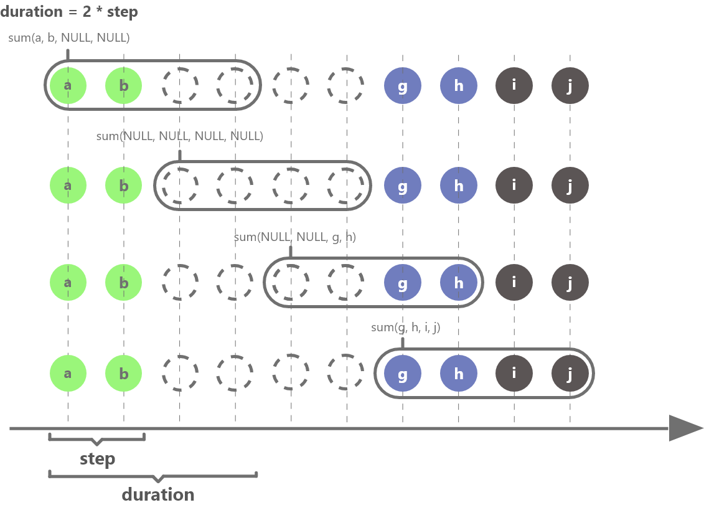
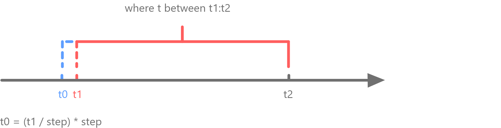

interval
语法
interval(X, duration, fill, [step], [explicitOffset=false], [closed],
[label], [origin])
详情
在 SQL 语句中，构建涵盖 X 所有数据的连续窗口以进行计算，其中每个窗口长度为 duration。对无数据的组，根据 fill 参数指定的方式填充缺失的计算结果。该函数只能在 SQL 的 group by 子句中使用，以实现插值查询，不能单独使用。
参数
-
X 是一个向量，必须是整数或者时间类型。
-
duration 是一个整数或者 DURATION 类型。 duration 支持的时间单位（区分大小写）：w, d, H, m, s, ms, us, ns 和由四个大写英文字母构成的交易日历标识（对应的文件必须保存在 marketHolidayDir 中）。
-
对 X 以年进行分组时，需要调用year 对 X 进行转换。
-
fill 是计算结果缺失值的填充方式，可取值为：'prev', 'post', 'linear', 'null', 'none' 和一个数字。
-
'prev'：使用前一个值填充。
-
'post'：使用后一个值填充。
-
'linear'：使用线性插值填充。对于非数值列，无法使用线性插值填充，这种情况下会使用 "prev" 的方式填充。
-
'null'：使用 null 值填充。
-
'none'：表示不进行插值。
-
一个数字：以该值填充。
-
-
step 是可选参数，是一个整数或者 DURATION 类型，表示计算窗口每次向前滑动的步长，必须为一个可以整除 duration 的数。 通过 step 可以指定一个比 duration 更小的滑动步长。默认与 duration 设置值相同，即计算窗口以 duration 的步长滑动。
注意：- 指定 step 后，不支持以下聚合计算：atImax, atImin, difference, imax, imin, lastNot, mode, percentile。
- 当 step 与 duration 的值不同时，在查询分区表时，不支持对查询列应用自定义聚合函数。
-
explicitOffset 是可选参数，是一个布尔值，表示第一个插值窗口起点是否为 where 条件指定的起始值。
-
closed 字符串，表示分组区间哪一个边界是闭合的。可取值为 'left' 或 'right'。
-
label 字符串，表示将分组区间的哪一个边界作为 label 输出。可取值为 'left' 或 'right'。
-
origin 字符串或与 X 具有相同时间类型的标量，表示基于时间戳调整分组。origin 为字符串时，可取以下值：
-
'epoch'：分组起始点为1970-01-01。
-
'start'：分组起始点为时间序列的第一个值。
-
'start_day'：分组起始点是时间序列的第一个值对应日期的午夜零点。
-
'end'：分组起始点是时间序列的最后一个时间戳。
-
'end_day'：分组起始点是时间序列的最后一个时间戳对应日期的午夜24点（即下一日的零点）。
-
注：从 2.00.2 版本开始，取消了 range 参数。
下图以 duration = 2 * step 为例，进一步解释插值窗口如何进行滑动计算（结果为 NULL 的窗口需要根据 fill 参数指定的方式进行填充）：

下图解释了 explicitOffset 不同设置下，插值起始窗口如何确定。图中 where 条件指定起始值为 t1，t1 前最近的一个能被 step 整除的值为 t0，当 explicitOffset 设置为 true 时，插值起始窗口以 t1 开始，当 explicitOffset 设置为 false 时，插值起始窗口以 t0 开始。

例子
使用前一个值填充：
timestampv = temporalAdd(2012.01.01T00:00:00.000, 0..11 join 15..20 , "s")
a1v = [3,2.5,1.7,1.1,1.8,2.1,1.1,1.4,1.9,2.4,2.9,2.6,1.1,2.7,1.1,2.9,1.9,1.7]
t = table(timestampv as timestamp, a1v as a1)
select max(a1) from t group by interval(timestamp, 3s, "prev")| interval_timestamp | max_a1 |
|---|---|
| 2012.01.01T00:00:00.000 | 3 |
| 2012.01.01T00:00:03.000 | 2.1 |
| 2012.01.01T00:00:06.000 | 1.9 |
| 2012.01.01T00:00:09.000 | 2.9 |
| 2012.01.01T00:00:12.000 | 2.9 |
| 2012.01.01T00:00:15.000 | 2.7 |
| 2012.01.01T00:00:18.000 | 2.9 |
使用指定数字填充：
select max(a1) from t group by interval(timestamp, 3s, 100)| interval_timestamp | max_a1 |
|---|---|
| 2012.01.01T00:00:00.000 | 3 |
| 2012.01.01T00:00:03.000 | 2.1 |
| 2012.01.01T00:00:06.000 | 1.9 |
| 2012.01.01T00:00:09.000 | 2.9 |
| 2012.01.01T00:00:12.000 | 100 |
| 2012.01.01T00:00:15.000 | 2.7 |
| 2012.01.01T00:00:18.000 | 2.9 |
下例中，以 2 年进行分组，需要将 X 的单位进行转换：
t=table([2016.10.12T00:00:00.500,2017.10.12T00:00:03.000,2018.10.12T00:00:03.000,2019.10.12T00:00:08.000,2020.10.12T00:00:08.000,2021.10.12T00:00:08.000] as time, [7,9,NULL,NULL,8,6] as price)
select max(price) from t group by interval(X=year(time), duration=2, fill="prev")| interval | max_price |
|---|---|
| 2016 | 9 |
| 2018 | 9 |
| 2020 | 8 |
下例说明 explicitOffset 不同设置下，第一个窗口起始时间的显示值。
symbol = `A`A`A`A`A`A`A`A`B`B`B`B
price= [29.55,29.74,29.51,29.54,29.79,29.81,29.50,29.56,29.41,29.49,29.83,29.76]
volume = [2200,1900,2100,3200,8800,5800,4300,9300,7900,9100,7300,6500]
tradeTime = [09:33:56,09:33:59,09:34:08,09:34:16,09:34:51,09:34:59,09:35:47,09:35:26,09:35:36,09:36:26,09:37:12,10:00:00]
t = table(tradeTime, symbol, volume, price)
//explicitOffset设置为true时，起始窗口以where指定的起始值09:33:50开始。
select max(price) as max_price, min(price) as min_price from t where tradeTime between 09:33:50:09:35:00 group by symbol, interval(X=tradeTime, duration=30, fill="post", explicitOffset=true) as tradeTime| symbol | tradeTime | max_price | min_price |
|---|---|---|---|
| A | 09:33:50 | 29.74 | 29.51 |
| A | 09:34:20 | 29.81 | 29.79 |
| A | 09:34:50 | 29.81 | 29.79 |
explicitOffset 设置为 false，第一个窗口的起始时间为 09:33:30，即 where 指定的起始时间（09:33:50）前第一个可以被 step 整除的时间点。本例中没有设置 step，它的取值与 duration 一样，第一个窗口起始时间计算方式为：second(09:33:50/30*30)。
select max(price) as max_price, min(price) as min_price from t where tradeTime between 09:33:50:09:35:00 group by symbol, interval(X=tradeTime, duration=30,fill="prev",explicitOffset=false) as tradeTime| symbol | tradeTime | max_price | min_price |
|---|---|---|---|
| A | 09:33:30 | 29.74 | 29.55 |
| A | 09:34:00 | 29.54 | 29.51 |
| A | 09:34:30 | 29.81 | 29.79 |
| A | 09:35:00 | 29.81 | 29.79 |
下例指定 step 为 20s，计算窗口长度为 60s，每 20s 向前滑动一次，进行计算。
select max(price) as max_price, min(price) as min_price from t where tradeTime between 09:33:50:09:35:00 group by symbol, interval(X=tradeTime, duration=60, fill=0, step=20, explicitOffset=false) as tradeTime| symbol | tradeTime | max_price | min_price |
|---|---|---|---|
| A | 09:33:40 | 29.74 | 29.51 |
| A | 09:34:00 | 29.81 | 29.51 |
| A | 09:34:20 | 29.81 | 29.79 |
| A | 09:34:40 | 29.81 | 29.79 |
| A | 09:35:00 | 0.00 | 0.00 |
下例以自定义交易日历 ADDA 的 2 个交易日进行分组
// 自定义交易日历 ADDA，其假期为 2024.01.02 和 2024.01.03
holiday = [2024.01.02, 2024.01.03]
addMarketHoliday("ADDA", holiday)
// 创建待查询表
n = 6
dates=[2023.12.30, 2024.01.02, 2024.01.03, 2024.01.05, 2024.01.07, 2024.01.09]
name = take(`A`B`S`C`F, n)
a1 = take(double(1..3),n)
t=table(dates as date, name as name, a1 as a1)
//计算 ADDA 每两个交易日中 “a1” 的最大值。
select max(a1) from t group by interval(X=date, duration=2ADDA, fill="null", label="right", origin="start")